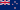
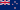
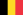

Uruguay en 1930, elle continue de se tenir tout les 4 ans depuis. Elle a seulement arrêté en 1942 et en 1946 à cause de la 2e Guerre Mondiale.
Uruguay en 1930, elle continue de se tenir tout les 4 ans depuis. Elle a seulement arrêté en 1942 et en 1946 à cause de la 2e Guerre Mondiale.
La Coupe du Monde de la FIFA (Fédération Internationale de Football Association) est un évènement sportif rassemblant 32 équipes nationales masculines de football (soccer).
Jules Rimet, le président de la FIFA de 1921 à 1954, a décidé de créer cet évènement en 1924.
Tenue pour la première fois en Uruguay en 1930, elle continue de se tenir tout les 4 ans depuis. Elle a seulement arrêté en 1942 et en 1946 à cause de la 2e Guerre Mondiale.
Cet évènement n'est pas seulement tenu pour les hommes. En effet en 1991, la première édition de la coupe de monde féminine s'est tenue en Chine. Elle aussi se déroule tout les 4 ans depuis et se déroule 1 an après celui des hommes.
La Coupe du monde est un évènement très attendu par des millions de gens.
Selon certaines statistiques, environ 3,6 milliards de personnes ont regardé la Coupe du Monde en  Russie en 2018.
En 2014, environ 3,2 milliards de personnes ont regardé cet évènement, tenu au
Russie en 2018.
En 2014, environ 3,2 milliards de personnes ont regardé cet évènement, tenu au  Brésil.
Brésil.
La Coupe du Monde, comme mentionné plus haut, rassemble 32 équipes nationales masculines pour 64 matchs durant une période d'un mois. Les premières deux semaines sont allouées aux matchs de poules au cours desquelles 16 équipes sont éliminées. Ensuite, après la phase éliminatatoires des huitièmes de finales, il restera 8 équipes. Les quarts de finales élimineront 4 équipes, les demi-finales élimineront 2 équipes, qui iront au match pour la troisième place, et les gagnants des matchs de demi-finales s'affronteront en finale. Le match pour la troisième place déterminera l'ordre des deux équipes éliminées durant les demi-finales. La finale permettra de déterminer le vainqeur du tournoi.
Par exemple, pour les hommes, en 2018, la France a remporté le tournoi en battant la  Croatie 4-2.
Pour les femmes, les
Croatie 4-2.
Pour les femmes, les  États-Unis ont remporté le tournoi en battant les
États-Unis ont remporté le tournoi en battant les  Pays-Bas 2-0.
Pays-Bas 2-0.
Pour les hommes, la France gardera son titre jusqu'au prochain tournoi au  Qatar en 2022.
Pour les femmes, les États-Unis garderont leur titre jusqu'au prochain tournoi en
Qatar en 2022.
Pour les femmes, les États-Unis garderont leur titre jusqu'au prochain tournoi en  Australie et en  Nouvelle-Zélande en 2023
Australie et en  Nouvelle-Zélande en 2023
Le Brésil avec 21 apparitions.
Le Brésil avec 4 victoires.
Just Fontaine avec 13 buts dans un tournoi.
Pelé avait 17 ans et 259 jours lors de la finale Brésil-Suède  en 1958.
en 1958.
 Dino Zoff avait 40 ans et 133 jours lors de la finale Italie-Allemagne de l'Ouest
Dino Zoff avait 40 ans et 133 jours lors de la finale Italie-Allemagne de l'Ouest  en 1982.
en 1982.
Il y a moins de statistiques pour cet édition.
Les États-Unis avec 4 victoires.
Marta avec 17 buts dans un tournoi.
| Gagnant | Année |
|---|---|
| Uruguay |
1930 |
| Italy |
1934 |
| Italy |
1938 |
| Uruguay |
1950 |
| Allemagne de l'ouest |
1954 |
| Brésil |
1958 |
| Brésil |
1962 |
Angleterre  |
1966 |
| Brésil |
1970 |
| Allemagne de l'ouest |
1974 |
Argentine  |
1978 |
| Italy |
1982 |
| Argentine |
1986 |
| Allemagne de l'ouest |
1990 |
| Brésil |
1994 |
| France | 1998 |
| Brésil |
2002 |
| Italy |
2006 |
Espagne  |
2010 |
| Allemagne |
2014 |
| France | 2018 |
| 2022 |
| Gagnante | Année |
|---|---|
| États-Unis |
1991 |
Norvège  |
1995 |
| États-Unis |
1999 |
| Allemagne |
2003 |
| Allemagne |
2007 |
Japon |
2011 |
| États-Unis |
2015 |
| États-Unis |
2019 |
| 2023 |
| Année/Prix | Ballon d'or (meilleur joueur) | Soulier d'or (meilleur buteur) | Gant d'or (meilleur gardien de but) | Meilleur jeune joueur | But du tournoi (meilleur but) |
|---|---|---|---|---|---|
| 1930 | Guillermo Stábile | ||||
| 1934 | Oldřich Nejedlý | ||||
| 1938 | Leônidas | ||||
| 1950 | Ademire | ||||
| 1954 | Sándor Kocsis | ||||
| 1958 | Just Fontaine | Pelé | |||
| 1962 | Flórián Albert Valentin Ivanov Garrincha Vavá Dražan Jerković Leonel Sánchez |
Flórián Albert | |||
| 1966 | Eusébio | Franz Beckenbauer | |||
| 1970 | Gerd Müller | Teófilo Cubillas | |||
| 1974 | Grzegorz Lato | Władysław Żmuda | |||
| 1978 | Mario Kempes | Antonio Cabrini | |||
| 1982 | Paolo Rossi | Paolo Rossi | Manuel Amoros | ||
| 1986 | Diego Maradona | Gary Lineker | Enzo Scifo | ||
| 1990 | Salvatore Schillaci | Salvatore Schillaci | Robert Prosinečki | ||
| 1994 | Romário | Oleg Salenko Hristo Stoichkov |
Michel Preud'homme | Marc Overmars | |
| 1998 | Ronaldo | Davor Šuker | Fabien Barthez | Micheal Owen | |
| 2002 | Oliver Kahn | Ronaldo | Oliver Kahn | Landon Donovan | |
| 2006 | Zinedine Zidane | Miroslav Klose | Gianluigi Buffon | Lukas Podolski | Maxi Rodríguez |
| 2010 | Diego Forlán | Thomas Müller | Iker Casillas | Thomas Müller | Diego Forlán |
| 2014 | Lionel Messi | James Rodríguez | Manuel Neuer | Paul Pogba | James Rodríguez |
| 2018 | Luca Modrić | Harry Kane | Thibault Courtois | Kylian Mbappé | Benjamin Pavard |
| 2022 |
| Année/Prix | Ballon d'or (meilleure joueuse) | Soulier d'or (meilleure buteuse) | Gant d'or (meilleure gardienne de but) | Meilleure jeune joueuse | But du tournoi (meilleur but) |
|---|---|---|---|---|---|
| 1991 | Carin Jennings | Michelle Akers | |||
| 1995 | Hege Riise | Ann Kristin Aarønes | |||
| 1999 | Sun Wen | Sun Wen Sissi |
Gao Hong Briana Scurry |
||
| 2003 | Birgit Prinz | Brigit Prinz | Silke Rottenberg | ||
| 2007 | Marta | Marta | Nadine Angerer | Marta | |
| 2011 | Homare Sawa | Homare Sawa | Hope Solo | Caitlin Ford | Abby Wambach |
| 2015 | Carli Lloyd | Célia Šašić | Hope Solo | Kadeisha Buchanan | Carli Lloyd |
| 2019 | Megan Rapinoe | Megan Rapinoe | Sari van Veenendaal | Giulia Gwinn | Cristiane |
| 2023 |
Le ballon de la Coupe du Monde 2022 sera Al Rihla.

La musique officielle de la Coupe du Monde 2022 sera "Hayya Hayya", chanté par Trinidad Cardona, Davido, Aisha.
| Groupe A | Groupe B | Groupe C | Groupe D | Groupe E | Groupe F | Groupe G | Groupe H |
|---|---|---|---|---|---|---|---|
| Qatar |
Angleterre |
Argentine |
France | Espagne |
Belgique | Brésil |
Portugal |
| Équateur | Iran | Arabie Saoudite |
Australie |
Costa Rica | Canada |
Serbie | Ghana |
| Senegal | États-Unis |
Mexique | Denmark | Allemagne |
Maroc | Suisse |
Uruguay |
| Pays-Bas |
Pays de Galle | Pologne |
Tunisie | Japan |
Croatie |
Cameroun | Corée du Sud |
| Huitième de finale | Quart de finale | Demi-finale | Finale |
|---|---|---|---|
#1 Groupe A |
Gagnant A1/B2 |
Gagnant A1-B2/C1-D2 |
|
#2 Groupe B |
|||
#1 Groupe C |
Gagnant C1/D2 |
Gagnant Demi-finale1 |
|
#2 Groupe D |
|||
#1 Groupe B |
Gagnant A2/B1 |
Gagnant A2-B1/C2-D1 |
|
#2 Groupe A |
|||
#1 Groupe D |
Gagnant C2/D1 |
Champion |
|
#2 Groupe C |
|||
#1 Groupe E |
Gagnant E1/F2 |
Gagnant E1-F2/G1-H2 |
|
#2 Groupe F |
|||
#1 Groupe F |
Gagnant G1/H2 |
Gagnant Demi-finale2 |
|
#2 Groupe E |
|||
#1 Groupe G |
Gagnant E2/F1 |
Gagnant E2-F1/G2-H1 |
|
#2 Groupe H |
|||
#1 Groupe H |
Gagnant G2/H1 |
||
#2 Groupe G |